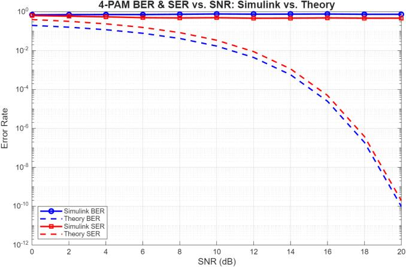

↗ View original
↗ View original2-PAM transmitted symbol waveform
This is the original 250-symbol simulation, shown as a pulse-shaped amplitude sequence. The binary sequence alternates between two normalized amplitudes.
An experimental study of pulse-amplitude modulation and signal recovery through an additive-white-Gaussian-noise channel, comparing symbol and bit error rates across ten PAM constellation sizes.
Digital pulse-amplitude modulation (M-PAM) sends data by mapping symbols to one of M possible signal amplitudes. A noisy channel can shift a received amplitude across a decision threshold and cause bit or symbol errors. This project models a transmitter, an AWGN channel, a matched-filter receiver and a symbol decision stage in MATLAB, then compares selected Simulink outcomes with theoretical BER/SER predictions.
To understand the design tradeoff, ten constellation orders—2, 4, 8, 16, 32, 64, 128, 256, 512 and 1024—were tested as input SNR varied. The principal outputs are transmitted waveforms, error-rate curves and model-versus-theory comparisons. The sections below show every distinct numbered results figure extracted from the supplied report, with engineering commentary.
Original submission: Asmaa Sapry and Raed Asham · CIE 237 · August 2025. Figures and values are reproduced from the submitted report; MATLAB/Simulink files are distributed unchanged.
↗ View originalThis is the original 250-symbol simulation, shown as a pulse-shaped amplitude sequence. The binary sequence alternates between two normalized amplitudes.
 ↗ View original
↗ View originalThe binary sequence alternates between two normalized amplitudes. With the widest separation between its two decision levels, the reported error curves fall toward zero at comparatively low SNR.
 ↗ View original
↗ View originalThis is the original 250-symbol simulation, shown as a pulse-shaped amplitude sequence. Four signal amplitudes encode two bits per symbol.
 ↗ View original
↗ View originalFour signal amplitudes encode two bits per symbol. The BER/SER curves fall with SNR, but symbol decisions are more noise-sensitive than with binary PAM.
 ↗ View original
↗ View originalThis is the original 250-symbol simulation, shown as a pulse-shaped amplitude sequence. Eight discrete levels carry three bits per symbol.
 ↗ View original
↗ View originalEight discrete levels carry three bits per symbol. At low SNR, the plotted SER remains substantial; increasing SNR makes the eight possible amplitudes easier to distinguish.
 ↗ View original
↗ View originalThis is the original 250-symbol simulation, shown as a pulse-shaped amplitude sequence. Sixteen possible amplitudes raise the nominal bits per symbol to four.
 ↗ View original
↗ View originalSixteen possible amplitudes raise the nominal bits per symbol to four. The reported error rate is high for a much wider low-SNR range than in 2-PAM.
 ↗ View original
↗ View originalThis is the original 250-symbol simulation, shown as a pulse-shaped amplitude sequence. The dense 32-level alphabet produces a broad amplitude range in the signal plot.
 ↗ View original
↗ View originalThe dense 32-level alphabet produces a broad amplitude range in the signal plot. The error curves show that substantially more SNR is needed for reliable decisions.
 ↗ View original
↗ View originalThis is the original 250-symbol simulation, shown as a pulse-shaped amplitude sequence. With 64 amplitudes (six bits per symbol), the plotted SER starts high and reduces as SNR increases.
 ↗ View original
↗ View originalWith 64 amplitudes (six bits per symbol), the plotted SER starts high and reduces as SNR increases. The transmission waveform alone cannot establish receiver accuracy; the error plot supplies that evidence.
 ↗ View original
↗ View originalThis is the original 250-symbol simulation, shown as a pulse-shaped amplitude sequence. The 128-level sequence has many closely spaced decision possibilities.
 ↗ View original
↗ View originalThe 128-level sequence has many closely spaced decision possibilities. The simulation indicates high SER in noise, followed by improved performance at higher SNR.
 ↗ View original
↗ View originalThis is the original 250-symbol simulation, shown as a pulse-shaped amplitude sequence. The 256-level graph exhibits a wide amplitude range and poor low-SNR symbol decisions.
 ↗ View original
↗ View originalThe 256-level graph exhibits a wide amplitude range and poor low-SNR symbol decisions. Its BER curve remains below its SER curve because a symbol error need not corrupt every bit.
 ↗ View original
↗ View originalThis is the original 250-symbol simulation, shown as a pulse-shaped amplitude sequence. The 512-PAM curve stays at elevated SER until relatively high SNR, reflecting the difficulty of discriminating 512 amplitude states..
 ↗ View original
↗ View originalThe 512-PAM curve stays at elevated SER until relatively high SNR, reflecting the difficulty of discriminating 512 amplitude states.
 ↗ View original
↗ View originalThis is the original 250-symbol simulation, shown as a pulse-shaped amplitude sequence. The 1024-level signal has the widest displayed amplitude range.
 ↗ View original
↗ View originalThe 1024-level signal has the widest displayed amplitude range. Its error curves shift farthest right, showing the largest SNR demand among the tested orders.
 ↗ View original
↗ View originalThese ten curves shift systematically to higher SNR as the number of PAM levels increases. This comparison is the clearest summary of the spectral-efficiency versus noise-tolerance tradeoff.
 ↗ View original
↗ View originalThe corresponding bit-error curves also shift right as M increases. Their exact values depend on symbol mapping, normalization, noise definition, and decision rule.
At the same definition of received SNR, the report's curves indicate that larger M-PAM constellations require higher SNR to reach low error rates. They also carry more bits per symbol. This is a tradeoff between raw spectral efficiency and noise tolerance—not a claim that high-order modulation is always inferior.
 ↗ View original
↗ View originalFor 2-PAM, the simulated error-rate traces remain near the upper region of the logarithmic plot while the theoretical curves decrease strongly. This is a discrepancy, not evidence of model agreement.

↗ View originalFor 4-PAM, the experimental points decline only slightly as SNR increases; the theoretical curves decrease much faster. The reported Simulink setup needs checking before quantitative validation.
 ↗ View original
↗ View originalFor 8-PAM, the Simulink curves remain nearly flat at relatively high error rates while the theoretical BER/SER predictions fall with SNR.
 ↗ View original
↗ View originalFor 16-PAM, the predicted error rates decrease with SNR but the measured Simulink BER and SER appear largely insensitive to the improvement in SNR.
 ↗ View original
↗ View originalFor 32-PAM, the same model-to-theory mismatch persists. This should be treated as a debugging and normalization issue rather than a validated performance comparison.
In the report's Simulink plots, the measured error rates frequently remain almost flat while theoretical values decrease with SNR. These should not be presented as validated performance. Possible causes to investigate include noise/SNR definition, symbol normalization, BER/SER signal wiring, error-rate measurement windows and model initialization. The supplied Simulink code defaults to M = 8, so the original model should be checked before claiming a verified multi-M sweep.
Demonstrated in the MATLAB graphs: Increasing signal-to-noise ratio lowers observed BER and SER, while higher modulation orders generally shift the error-rate curves toward higher SNR. The matched filter implements correlation with the transmitted pulse to support symbol detection in AWGN.
Not yet verified: The five Simulink comparisons show large discrepancies from theoretical error rates. These plots document the project investigation but do not establish numerical agreement or demonstrate a quantified matched-filter improvement relative to a receiver without matched filtering.
Reproducibility: The original MATLAB scripts and Simulink model are attached. The plots shown here are extracted from the original PDF; no simulations were rerun or silently corrected for this portfolio edition.
Original 9-page PDF including derivations, 27 result graphs, discussion and references.
View report PDF ↗MatLab_Code.m, Simulink_Code.m and Simulink_Simulation.slx, preserved as supplied.
Download all source files ↓